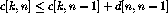
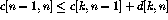
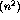
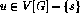
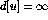
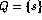
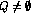
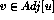
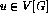
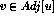

Problem Solving Techniques
Most important: make sure you understand exactly what the question is asking - if not, you have no hope of answer it!!
Never be afraid to ask for another explanation of a problem until it is clear.
Play around with the problem by constructing examples to get insight into it.
Ask yourself questions. Does the first idea which comes into my head work? If not, why not?
Am I using all information that I am given about the problem?
Read Polya's book How to Solve it.
16-1: The Euclidean traveling-salesman problem is the problem of determining the shortest closed tour that connects a given set of n points in the plane.
Bentley suggested simplifying the problem by restricting attention to bitonic tours, that is tours which start at the leftmost point, go strictly left to right to the rightmost point, and then go strictly right back to the starting point.
First of all, play with the problem. Why isn't it trivial?
Why will they let us assume that no two x-coordinates are the same? What does the hint mean? What happens if I scan from left to right?
If we scan from left to right, we get an open tour which uses all points to the left of our scan line.
Hey, I have got a recurrence! And look, the two parameters which describe my optimal tour are the two endpoints.
Let c[k,n] be the optimal cost partial tour where the two endpoints are k<n.
 (when k < n-1)

c[0, 1]=d[0, 1]
But this doesn't quite give the tour, but just an open tour. We simply must figure where the last edge to n must go.
Graphs
A graph G consists of a set of vertices V together with a set E of vertex pairs or edges.
Graphs are important because any binary relation is a graph, so graphs can be used to represent essentially any relationship.
Example: A network of roads, with cities as vertices and roads between cities as edges.
The Friendship Graph
Consider a graph where the vertices are people, and there is an edge between two people if and only if they are friends.
What questions might we ask about the friendship graph?
A graph is undirected if (x,y) implies (y,x). Otherwise the graph is directed. The ``heard-of'' graph is directed since countless famous people have never heard of me! The ``had-sex-with'' graph is presumably undirected, since it requires a partner.
An edge of the form (x,x) is said to be a loop. If x is y's friend several times over, that could be modeled using multiedges, multiple edges between the same pair of vertices. A graph is said to be simple if it contains no loops and multiple edges.
A path is a sequence of edges connecting two vertices. Since Mel Brooks is my father's-sister's-husband's cousin, there is a path between me and him!
If I were trying to impress you with how tight I am with Mel Brooks, I would be much better off saying that Uncle Lenny knows him than to go into the details of how connected I am to Uncle Lenny. Thus we are often interested in the shortest path between two nodes.
A graph is connected if there is a path between any two vertices. A directed graph is strongly connected if there is a directed path between any two vertices.
The degree of a vertex is the number of edges adjacent to it.
A social clique is a group of mutual friends who all hang around together. A graph theoretic clique is a complete subgraph, where each vertex pair has an edge between them. Cliques are the densest possible subgraphs. Within the friendship graph, we would expect that large cliques correspond to workplaces, neighborhoods, religious organizations, schools, and the like.
A cycle is a path where the last vertex is adjacent to the first. A cycle in which no vertex repeats (such as 1-2-3-1 verus 1-2-3-2-1) is said to be simple. The shortest cycle in the graph defines its girth, while a simple cycle which passes through each vertex is said to be a Hamiltonian cycle.
Data Structures for Graphs
There are two main data structures used to represent graphs.
Adjacency Matrices
Can we save space if (1) the graph is undirected? (2) if the graph is sparse?
Adjacency Lists
Note that can be much less than n when the graph is sparse. If necessary, the two copies of each edge can be linked by a pointer to facilitate deletions.
Tradeoffs Between Adjacency Lists and Adjacency Matrices
Comparison Winner Faster to test if (x, y) exists? matrices Faster to find vertex degree? lists Less memory on small graphs? lists (m+n) vs.  Less memory on big graphs? matrices (small win) Edge insertion or deletion? matrices O(1) Faster to traverse the graph? lists m+n vs. Better for most problems? lists
Both representations are very useful and have different properties, although adjacency lists are probably better for most problems.
Traversing a Graph
One of the most fundamental graph problems is to traverse every edge and vertex in a graph. Applications include:
For efficiency, we must make sure we visit each edge at most twice.
For correctness, we must do the traversal in a systematic way so that we don't miss anything.
Since a maze is just a graph, such an algorithm must be powerful enough to enable us to get out of an arbitrary maze.
Marking Vertices
The idea in graph traversal is that we must mark each vertex when we first visit it, and keep track of what have not yet completely explored.
For each vertex, we can maintain two flags:
We must also maintain a structure containing all the vertices we have discovered but not yet completely explored.
Initially, only a single start vertex is considered to be discovered.
To completely explore a vertex, we look at each edge going out of it. For each edge which goes to an undiscovered vertex, we mark it discovered and add it to the list of work to do.
Note that regardless of what order we fetch the next vertex to explore, each edge is considered exactly twice, when each of its endpoints are explored.
Correctness of Graph Traversal
Every edge and vertex in the connected component is eventually visited.
Suppose not, ie. there exists a vertex which was unvisited whose neighbor was visited. This neighbor will eventually be explored so we would visit it:
Traversal Orders
The order we explore the vertices depends upon what kind of data structure is used:
The three possible colors of each node reflect if it is unvisited (white), visited but unexplored (grey) or completely explored (black).
Breadth-First Search
BFS(G,s)
for each vertex  do
color[u] = white
 , ie. the distance from s
p[u] = NIL, ie. the parent in the BFS tree
color[u] = grey
d[s] = 0
p[s] = NIL

while  do
u = head[Q]
for each  do
if color[v] = white then
color[v] = gray
d[v] = d[u] + 1
p[v] = u
enqueue[Q,v]
dequeue[Q]
color[u] = black
Depth-First Search
DFS has a neat recursive implementation which eliminates the need to explicitly use a stack.
Discovery and final times are sometimes a convenience to maintain.
DFS(G)
for each vertex  do
color[u] = white
parent[u] = nil
time = 0
for each vertex do
if color[u] = white then DFS-VISIT[u]
Initialize each vertex in the main routine, then do a search from each connected component. BFS must also start from a vertex in each component to completely visit the graph.
DFS-VISIT[u]
color[u] = grey (*u had been white/undiscovered*)
discover[u] = time
time = time+1
for each  do
if color[v] = white then
parent[v] = u
DFS-VISIT(v)
color[u] = black (*now finished with u*)
finish[u] = time
time = time+1